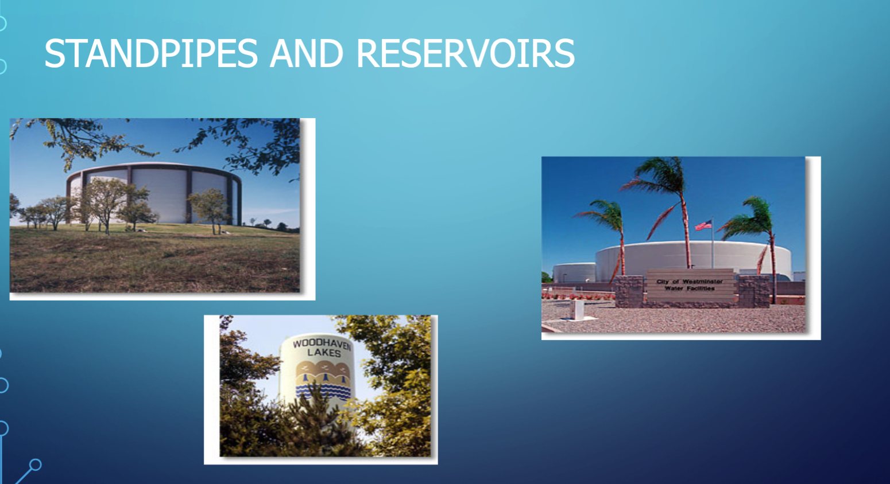
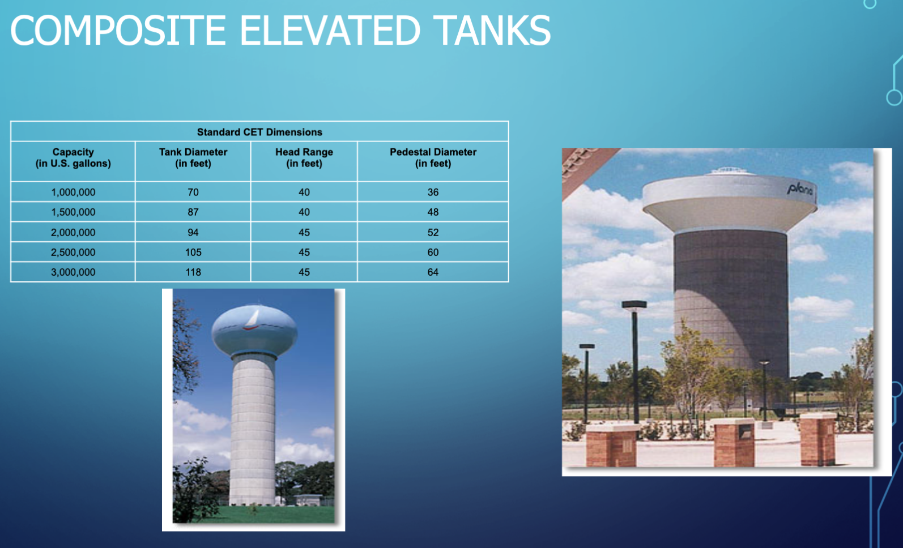
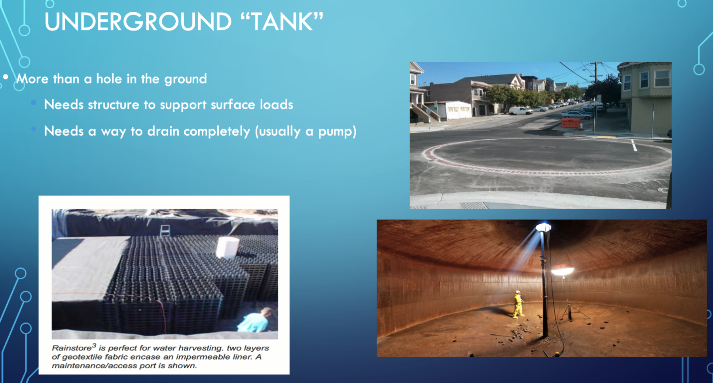
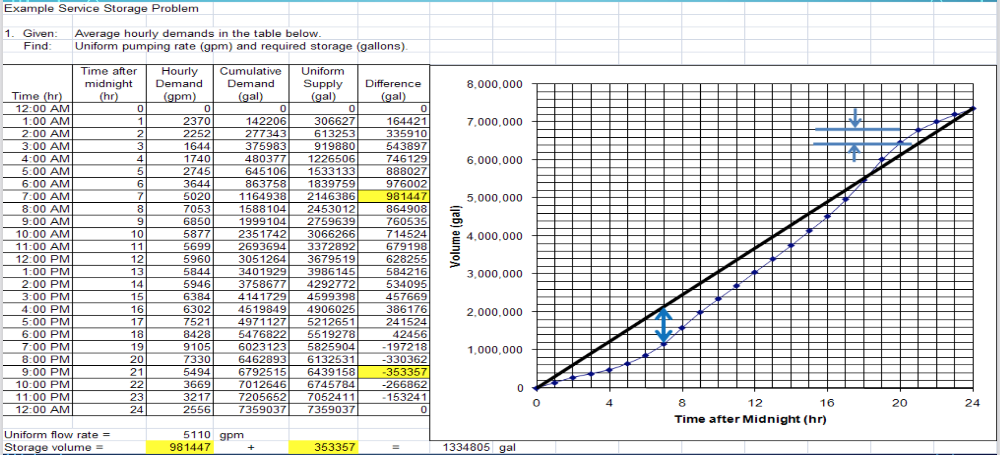
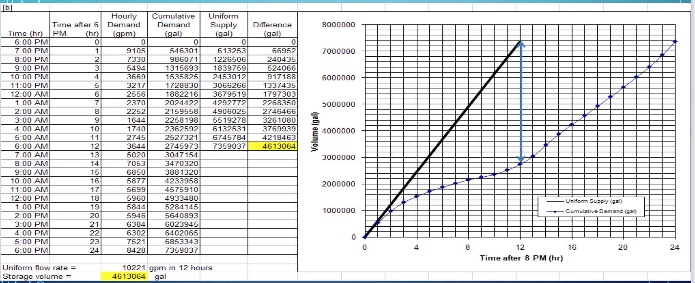

CE 3372 Water Systems Design
Storage Systems#
Storage is used in water supply, storm water management, and wastewater systems for several reasons.
Course Website
Readings#
Videos#
Outline#
System Scales (size)
Photo Essay of Storage Devices
Design (Sizing) Storage Devices
Storage plays a critical role in drinking water supply and treatment systems, serving as a buffer between water production and consumption. Water storage facilities, such as reservoirs, tanks, and towers, are designed to hold treated water before distribution, ensuring a reliable and consistent supply to meet varying demand throughout a day. Storage capacity allows for managing peak demand periods, fire protection, system maintenance, and emergency situations like power outages or supply disruptions. It also helps maintain adequate water pressure across the distribution network.
In the context of water treatment, storage can be part of both raw water (before treatment) and treated water (after treatment) systems. Raw water storage allows for managing fluctuations in water sources, such as rivers or groundwater, ensuring a stable supply for treatment plants. On the treated water side, storage ensures that water has time for disinfectants, such as chlorine, to inactivate harmful pathogens effectively, providing an additional safeguard for public health. The strategic placement and design of storage systems are critical in maintaining water quality and ensuring a continuous, safe supply to the community.
Scale#
There are several scales of storage:
large (water supply reservoirs, like Lake Allen Henry)

moderate (Southwest Lubbock Water Treatment)

localized (storage tanks)

The large scale systems are sized using water resources management principles, which are discussed to some extent in Gupta pp. 545-548. The usual tool is called a ripple-chart or double mass curve (same thing, different names). In local scale an identical tool is used, but at a much different (hourly) time-scale.
Local Scale#
The remainder of this chapter will focus on the local scale systems. At the local scale (Gupta pp. 548-553) we are concerned with three categories of storage:
SERVICE STORAGE
Flow equalization — generally things are designed for a particular steady flow rate and storage can be used to accommodate variable flow rates in a system.
Pressure zone maintenance
EMERGENCY STORAGE
used to provide supply during repairs and other system interrupts (except fire suppression)
FIRE STORAGE
used to provide supply during fire fighting activities – considered seperately from emergency storage
Storage Systems (Types)#
Surface Reservoirs

Standpipes

Elevated Tanks

Hydropillar (1/2)

Hydropillar (2/2)

Spheroid Tanks

Standpipes (Ground Level)

Standpipes/Reservoirs

Freshmix

Composite Elevated

Typical RFP and Installation#

Underground Installations#

Purposes#
Equalizing or Operating Storage#
Equalize pumping rate into reservoirs
Provide storage for peak demand times
Provide system pressure without booster pumping
Fire and Emergency#
Pressure maintenance
Supply during shutdowns for repairs

Flow-Equalization#
Flow-equalization storage is sufficient storage to account for peak demands in the system without having to exceed supply capacity. A desirable volume is 1-2 days of average daily demand. (cite)
Emergency#
Emergency storage to allow the system to operate without external supply sources for a period of time to allow for repairs or other unusual circumstances. Without emergency storage, every upset will lead to a ”boil-water” order or substantial interruption of service — these kinds of interruptions should be rare if the system is well engineered. A desirable volume is 1-2 days of average daily demand. (cite)
Fire Storage#
Fire storage is sufficient storage to allow the system to meet routine uses plus substantial fire flow. The desirable volume is based on expected fire flow rates multiplied by the required fire flow duration. In most cases it is implicitly stipulated in design guidance documents (e.g. San Marcos manual) by vurtue of required hydrant flow rates.
How Much?#
Engineering would tend to choose for the larger volumes; Economics will argue for the smaller volumes. The engineer will have to balance these competing choices in a design. Additionally, residence times in any storage reservoir for TREATED water should not exceed a reasonable amount disinfection residual contact time.
For chlorine/chloramine disinfection time is on the order of 6-10 days
Hydraulic retention time of any such reservoir should be no longer than 8 days (as a reasonable rule of thumb).
Hydraulic retention time (HRT) is the ratio of storage volume to average discharge through the reservoir;
Operating Storage#
Determine hourly demand for design day
Calculate cumulative draft
Plot cumulative draft vs. time (24 hr)
Draw diagonal line representing constant pumping
Read required storage as sum of two maximum ordinates




